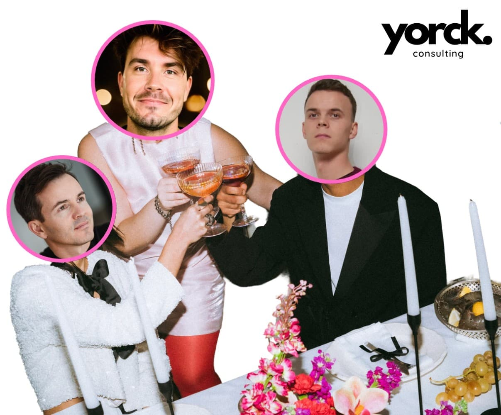

WARUM WIR BEI YORCK MIT GALLUP ARBEITEN – NICHT NUR FÜR ANDERE, SONDERN AUCH FÜR UNS SELBST.
Frage nicht, was die Welt braucht. Frage, was dich lebendig macht – und tu es. Denn was die Welt braucht, sind Menschen, die lebendig geworden sind.
Howard Thurman
Was passiert, wenn ein Team nicht fragt: Wer hat Kapazitäten?, sondern: Wer hat Energie? Wer hat Talent? Wer will das wirklich? Und was wäre, wenn das nicht romantisch gedacht ist – sondern praktisch?

Bei Yorck war das von Anfang an Teil unseres Konzepts. Schon bei der Gründung haben wir uns bewusst für den Gallup CliftonStrengths®-Ansatz entschieden. Nicht als Tool, sondern als Haltung. Als gemeinsame Sprache, um Stärken sichtbar zu machen – und als Fundament für eine Teamkultur, die auf Unterschiedlichkeit baut. Denn wir glauben: Gute Zusammenarbeit entsteht nicht durch Gleichheit – sondern durch bewusste Ergänzung.
Stärken sehen. Aufgaben verteilen. Verantwortung leben. Das Gallup-Modell misst keine Kompetenzen – sondern Talente. Also das, was Menschen von Natur aus antreibt, begeistert, strukturiert, kommuniziert oder verbindet. Es geht nicht um „Kann ich das?“, sondern um „Bin ich das?“.
Im Alltag macht das einen riesigen Unterschied. Wenn ich weiß, dass ich ein „Maximizer“ bin, suche ich nicht die Standardlösung – sondern strebe nach Exzellenz. Wenn ich „Activator“ bin, will ich Dinge ins Rollen bringen, nicht endlos durchdenken. Wenn ich „Input“ hoch ausgeprägt habe, bin ich ein wandelndes Wissensarchiv – aber brauche auch Raum, um das Gehörte zu sortieren. Wir nutzen dieses Wissen bewusst: in der Rollenverteilung, in der Aufgabengestaltung, in der Art, wie wir gemeinsam planen und reflektieren. Wer organisiert von Natur aus? Wer moderiert gern? Wer hat ein Gespür für Teamdynamiken? Wer denkt gerne quer – und wer lieber in die Tiefe?
Drei Profile – drei starke Pole - Gerade in unserem Kernteam zeigen sich spannende Kontraste:
- Christian bringt Tiefe, Struktur und einen hohen Qualitätsanspruch mit. „Leistungsorientierung“, „Disziplin“, „Höchstleistung“ – das ist kein Anspruch an andere, sondern der Maßstab an sich selbst.
- Niklas – unser jüngster Zugang – vereint Wissbegier, Tatkraft und Kommunikationsfreude. Er bringt frische Perspektiven, probiert aus, stellt Fragen – und bleibt dabei immer im Kontakt. Eine Mischung aus Ideenmaschine und beziehungsstarker Möglichmacher.
- Jan (aka ich 😉) lebt die Kombination aus Energie, Storytelling und Menschenkenntnis. Mit „Maximizer“, „Communication“, „Woo“ und „Positivity“ im Gepäck bin ich eher der Impulsgeber, Netzwerker und Möglichkeitsdenker – immer mit Blick auf das große Ganze.
Was uns verbindet: Wir alle wollen Wirkung. Und wir wissen, dass das nur geht, wenn man nicht alles gleich macht – sondern sich ergänzt.

Zwischen Stärken und blinden Flecken - Klingt rund? Ist es oft auch. Aber: Jeder Stärke wohnt ein Risiko inne.
- Wer immer aktiviert, kann andere überrollen.
- Wer immer maximiert, findet nie ein Ende.
- Wer immer Beziehungen pflegt, verliert manchmal den Fokus.
- Wer immer leistet, geht Gefahr, sich selbst zu überfordern.
Deshalb schauen wir nicht nur auf die Top 5 – sondern auch auf das, was fehlt. Nicht um es zu „reparieren“, sondern um bewusst damit umzugehen. Stärkenorientierung heißt für uns nicht: alles können. Sondern: das Richtige gemeinsam tun.
Warum wir das teilen? - Weil wir überzeugt sind: Transformation beginnt nicht beim Kunden – sondern bei uns selbst. Gallup ist für uns nicht nur Beratungsinstrument. Es ist Teil unserer Gründungs-DNA. Wir nutzen es, um in Führung zu gehen – auch intern. Um Klarheit zu schaffen. Verantwortung zu teilen. Und ein Arbeitsumfeld zu gestalten, in dem Menschen das machen, was sie wirklich können. Wir arbeiten mit Stärken, weil wir an sie glauben – in Organisationen, in Kulturprozessen, in Führung. Und weil wir wissen: Das ist kein Add-on. Es ist der Unterschied, der den Unterschied macht.
Vielleicht ist es das, was wir am meisten brauchen in Zeiten von Komplexität und Tempo: Nicht mehr Tools. Sondern mehr Vertrauen in das, was Menschen von innen heraus mitbringen. Nicht mehr Gleichheit. Sondern mehr bewusste Unterschiede. Denn gute Zusammenarbeit entsteht nicht dadurch, dass alle alles können. Sondern dadurch, dass jede*r etwas einbringt, was das Ganze besser macht.
Und genau daran glauben wir – jeden Tag ein bisschen mehr.
Bis bald – eure Yorckies
← Zurück zu Insights